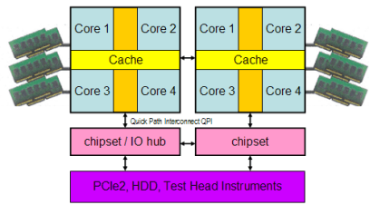

SmartCalc multithreading basics
Multithreading involves both, hardware and software to make the most use of multiple processors (often with multiple cores) found in today's high-end workstations.
The implementation of multithreading occurs in the test method, or C++ code of the V93000 test program. It makes use of some standard libraries, native to Linux, that provide functions to control threading activity within an application.
Multithreading from a hardware perspective
The hardware of the V93000 test system's workstation determines the maximum performance that can be used for SmartCalc.
The following figure shows the core hardware of the system controller CPU and how it interacts with the test system.

The above figure exemplifies a Hewlett Packard Z800 system controller having two separate CPUs, each CPU has four cores.The key benefits compared to the legacy XW system controller generation are the increased number of cores, the fact that each core has its own chipset, six direct attached memory channels and quick path interconnections between the CPUs and chipsets.
In order to achieve the best throughput, a dual-side test program should run on a system controller with ideally two or more cores for example, XW8200 or XW440), a quad-site test programs should run on four or more cores for example, XW8400) and an octal-site test program on eight cores for example, Z800).
System controller and CPU cores
The more sites that are tested in parallel, the more CPU cores are beneficial.
If the entire calculation and upload can be hidden behind other tests, the system controller type becomes irrelevant.
The latest generation of V93000 test system controllers incorporate 8 or more CPU cores.
The command top shows the usage of all existing CPU cores.
Using cat/proc/cpuinfo shows the installed CPUs in more detail.
Example
The following section shows a truncated output of the /proc/cpuinfo of a XW4400 system controller:
processor: 0 vendor_id: GenuineIntel cpu family: 6 model: 15 model name: Intel(R) Core(TM)2 CPU 6700 @ 2.66GHz stepping: 6 cpu MHz: 1596.000 cache size: 4096 KB physical id: 0 siblings: 2 core id: 0 cpu cores: 2 .... processor: 1 vendor_id: GenuineIntel cpu family: 6 model: 15 model name: Intel(R) Core(TM)2 CPU 6700 @ 2.66GHz stepping: 6 cpu MHz: 1596.000 cache size: 4096 KB physical id: 0 siblings: 2 core id: 1 cpu cores: 2
Functional changes
- Introduced in SmarTest 6.5.3